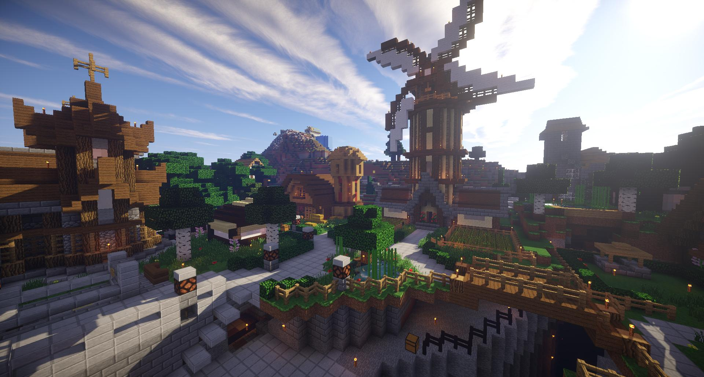
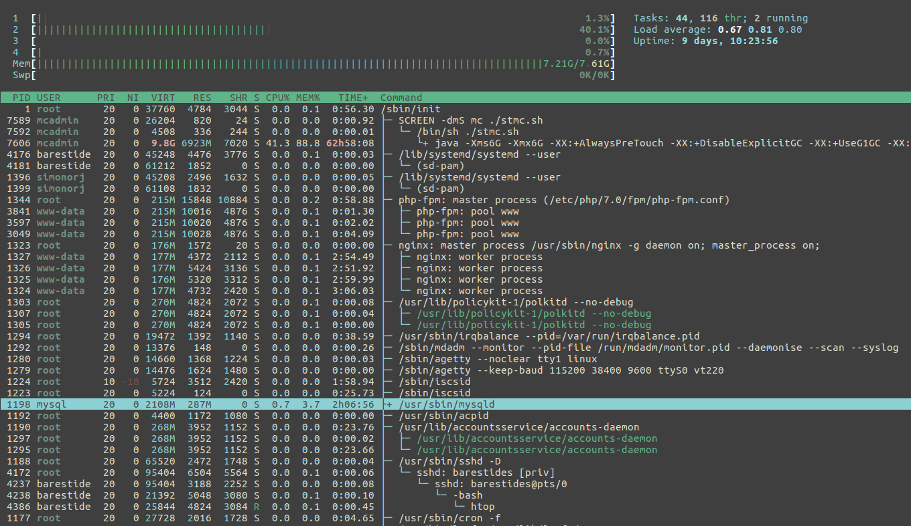

I am a computer science student at UC. I primarily have experience with programming in Java and Clojure as well as experience in Linux server administration. I have been running my Minecraft server, Arcane Survival, for almost 3 years.
So far, I have done 4 software development internships at 3 different places places: Projetech, Siemens PLM Software, and with Air Force Research Laboratories / Department of Defense Supercomputer Resource Center (AFRL/DSRC) at Wright-Patterson Air Force Base.
I spent two summers at AFRL/DSRC working on three separate projects. The first project was a front end design overhaul of an existing web application built by a previous intern. This was my introduction to software development in a professional environment. The second project involved finding a solution for a group of people to be able to share information and collaborate in a secure environment. The third project was rather open-ended. I experimented with Software Defined Networking technologies to see if it would be a worthwhile investment. This was more of a learning experience for me as I had previously very little networking knowledge.
At Siemens PLM Software, I worked on a team to develop a "testing harness" to assist the quality assurance team with writing automated tests. This involved communicating with people across the world in order to deliver a useful product. Throughout this co-op I improved my Java programming skills.
At Projetech, I worked on an internal tool that would help the technical side of the company better manage the multitude of clients' cloud instances. During this co-op, I learned a new language, Clojure, and gained proficiency with Emacs and with using git for version control in a collaborative environment. I also did significantly more organized planning with my manager and fellow co-ops than I had in previous internships.
As mentioned, I have been running a survival multiplayer Minecraft server for the past several years. I founded it in May of 2014 with an online friend of mine. Since then we have grown to a small, but tight-knit community, and have added several fantastic people to our staff team. This has been my primary personal project that I have spent my free time on.
Administering the server has helped me to develop both technical skills as well as soft skills, through communicating with players and staff alike.
As far as technical skills go, there are many hats to wear. I learned to set up the Minecraft server on a Linux machine, ensuring that all of the plugins worked nicely together and that performance of the virtual server would not cause lag issues for players. I helped develop custom Java plugins for the server in order to improve game play and make the server stand out. I worked to develop and host a website for the server, complete with a forum software, application system, and staff tools.
Soft skills were much more challenging to develop for me. While there are hundreds of guides for properly setting up a production MySQL server, where are the instructions for resolving disputes between players? How do I tactfully tell a staff member that they are behaving inappropriately, and not representing the server professionally. No, these situations require experience and finesse to handle effectively. Given as this was one of my first times in an authoritative position in a "real" organization, it was a huge learning experience for me.
I have also gained some experience running a business through running this server. After all, hosting for the server and the website is not free. I've never really viewed the server as a way to make money, but it is nice to have the community chip in, so that I'm not paying out of my own pocket. One of the core values of the server is that everything that has been built has been sourced 100% legitimately from the game. That is to say, nothing has been spawned or hacked in. Unfortunately, this makes it different to create incentives for players to donate. This, coupled with relatively low player count, makes donations few and far between.
Generally, with more players, come more donations, and a better player experience, to a point. Advertising to get more players is tricky, and often feels useless. I'd like to know what percentage of players that join the server actually play for more than 2 hours.
However, some players do end up sticking around. And they have formed an awesome community that I am very happy to continue to support.